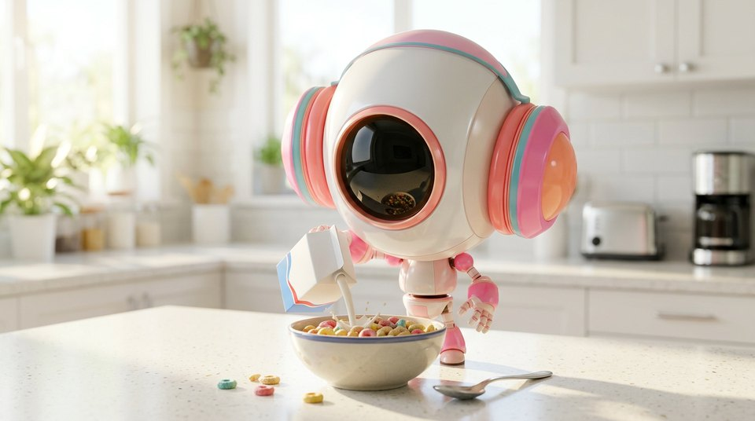

What it means
Bright, even, nearly shadowless illumination; open and optimistic.
When to use it
Use for comedy, commercials, and worlds without secrets.
Try this
"morning kitchen scene, high-key lighting"
Pairs well with
Works in
seedance · kling · veo · runway
Tags
Examples
